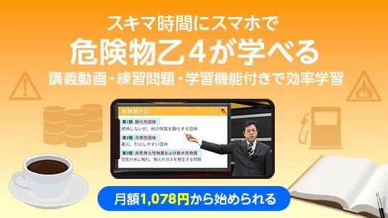
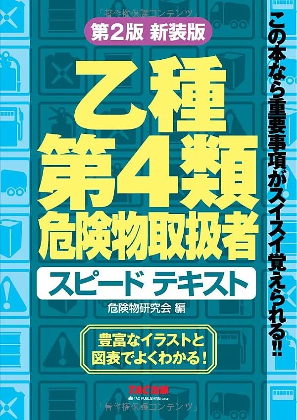
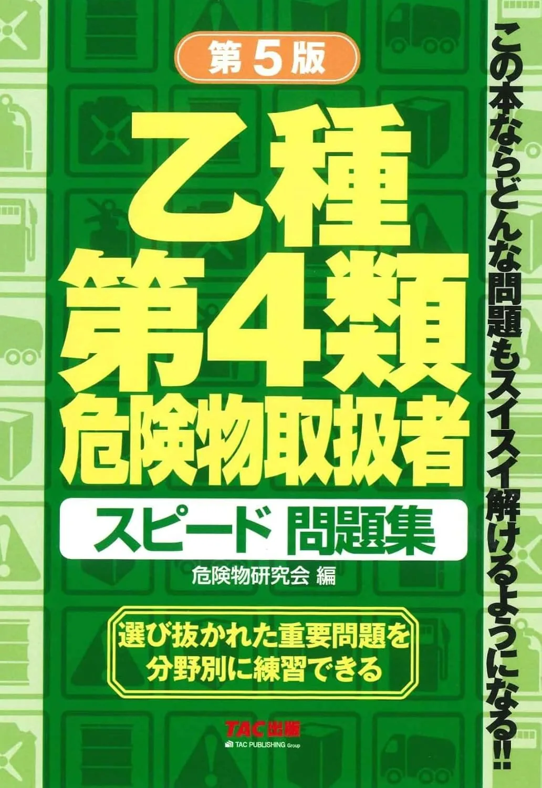

オンライン講座2選【オンスク vs SMART】
オンスク.JPとSMART合格講座を比較。五肢択一35問・三科目・各科目60%を前提に独学テキストとの併用設計を解説します。
2講座を比較するオンライン講座
危険物取扱者試験（乙種第4類）の試験で押さえたい用語を、分野別にまとめています。各ページで意味や試験での論点を確認できます。学習の進め方は試験ガイド（articles/）をご覧ください。
用語暗記と併用するテキスト・問題集・講座の比較記事へ。

オンスク.JPとSMART合格講座を比較。五肢択一35問・三科目・各科目60%を前提に独学テキストとの併用設計を解説します。

TACスピード・ユーキャン速習・7日でクリアの3冊を比較。五肢択一35問・三科目・各科目60%を前提に1冊選びを解説します。

TACスピード問題集・ユーキャン過去問・7日でクリア問題集の3冊を比較。テキスト読了後の演習1冊の選び方をまとめます。
用語解説では、試験で押さえる用語の意味と関連条文を調べられます。学習計画や申込手続きなど進め方は試験ガイドをご覧ください。
全422語・3分野。キーワード検索と分野で絞り込めます。
| 用語 | 分野 | 概要 |
|---|---|---|
| 法令・制度 | 指定数量、製造所等、危険物取扱者制度はいずれも危険物の安全な取扱い、貯蔵、管理に関係する法令上の重要論点である。 | |
| 法令・制度 | セルフ式給油取扱所の基準とは、顧客が自分で給油する給油取扱所で、従業員による監視などを求める決まりです。 | |
| 法令・制度 | タンクローリーとは、危険物を積んで運ぶ車両で、法令上は移動タンク貯蔵所と呼ばれる貯蔵所の一種です。 | |
| 法令・制度 | タンク貯蔵所は、タンクを用いて危険物を貯蔵する貯蔵所の総称で、屋外・屋内・移動などの種類があります。 | |
| 法令・制度 | 一般取扱所は、給油・販売・移送取扱所以外で危険物を取り扱う取扱所の一種です。 | |
| 法令・制度 | 一般取扱所とは、給油取扱所や販売取扱所などの特定の取扱所以外で、危険物を取り扱う取扱所のことです。 | |
| 法令・制度 | 丙種の違いとは、丙種が甲種・乙種と比べて扱える範囲が最もせまく、立会いができない点をいいます。 | |
| 法令・制度 | 丙種危険物取扱者とは、第4類のうち決められた一部の危険物だけを扱える資格で、立会いはできません。 | |
| 法令・制度 | 乙種危険物取扱者とは、免状に記載された類の危険物を取り扱える資格で、乙4は第4類を扱う乙種です。 | |
| 法令・制度 | 乙種第4類（乙4）とは、危険物取扱者免状の一つで、第4類の引火性液体を取り扱える資格のことです。 | |
| 法令・制度 | 予防規程は、危険物施設における火災予防や保安管理を適切に行うための施設ルールです。 | |
| 法令・制度 | 予防規程の作成とは、一定の製造所等で、火災予防や保安管理のために守るべき自主的なルールを定めることです。 | |
| 法令・制度 | 予防規程の作成・認可とは、施設の保安ルールである予防規程を作り、市町村長等の認可を受ける一連の手続きです。 | |
| 法令・制度 | 事故時対応は、漏えいや火災発生時に拡大防止・火気厳禁・通報・避難などを行う初期対応です。 | |
| 法令・制度 | 仮使用は、変更工事中などで製造所等の一部を使用する場合に、法令上承認が必要となることがある手続きです。 | |
| 法令・制度 | 仮使用の承認は、変更工事中などで製造所等の一部を使用する場合に、法令上承認が必要となることがある手続きです。 | |
| 法令・制度 | 仮取扱いは、指定数量以上の危険物を一時的に取り扱う場合に、法令上承認が必要となることがある手続きです。 | |
| 法令・制度 | 仮貯蔵は、指定数量以上の危険物を一時的に貯蔵する場合に、法令上承認が必要となることがある手続きです。 | |
| 法令・制度 | 仮貯蔵・仮取扱いは、指定数量以上の危険物を一時的に貯蔵または取り扱う場合の承認制度です。 | |
| 法令・制度 | 位置の基準は、危険物施設の設置位置に関する法令上の要件で、保安距離や保有空地と関連します。 | |
| 法令・制度 | 使用停止は、製造所等が法令上の基準に適合しない場合などに、行政上命令される措置の一つです。 | |
| 法令・制度 | 保安員（危険物施設保安員）とは、保安監督者のもとで施設や設備の点検・整備など、施設の保安にあたる人です。 | |
| 法令・制度 | 保安検査は、一定の危険物施設の安全性を確認するための検査で、施設に関係する制度です。 | |
| 法令・制度 | 保安検査の対象は一定の危険物施設で、施設の安全性確認のため保安検査を受ける必要がある場合があります。 | |
| 法令・制度 | 保安講習は、危険物の取扱作業に従事する者に対し、一定の時期に受講が求められる場合がある教育制度です。 | |
| 法令・制度 | 保安講習の対象は、危険物の取扱作業に従事する者で、資格取得後も一定の時期に受講が求められる場合があります。 | |
| 法令・制度 | 保安講習の対象・時期とは、危険物の取扱作業に従事する危険物取扱者が、定期的に受ける保安教育の対象者と受講時期のことです。 | |
| 法令・制度 | 保安距離は、火災や爆発時の影響を周囲の施設へ及ぼしにくくするための、保安対象物との距離の基準です。 | |
| 法令・制度 | 保有空地は、危険物施設の周囲に確保する空地で、延焼防止や消火活動に関係します。 | |
| 法令・制度 | 倍数計算は、貯蔵数量を指定数量で割って倍数を求め、複数品名の場合は個別に計算して合算する方法です。 | |
| 法令・制度 | 免状（危険物取扱者免状）は、危険物取扱者の資格を証明する書類で、甲種・乙種・丙種の別があり、扱える危険物の範囲が決まります。 | |
| 法令・制度 | 免状の交付は、危険物取扱者試験の合格者に都道府県知事が免状を与える手続きで、これにより危険物を扱う資格を得ます。 | |
| 法令・制度 | 免状の交付・書換え・再交付は、危険物取扱者免状にまつわる3つの手続きで、それぞれ「資格取得」「記載変更」「亡失・損傷」と事由が異なります。 | |
| 法令・制度 | 消防試験研究センターなど試験実施団体が直接公表する受験案内・試験要項・合格発表・出題範囲などの情報を指す。 | |
| 法令・制度 | 免状の再交付は、免状を亡失・滅失・汚損・破損したときに、都道府県知事に申請して免状を再び受ける手続きです。 | |
| 法令・制度 | 危険物の規制に関する政令に付される表で、危険物の品名を列挙し、指定数量の算定に用いる。 | |
| 法令・制度 | 危険物とは、消防法別表第一に品名とともに定められた、火災の危険性が高い物品で、第1類から第6類に分類されます。 | |
| 法令・制度 | 危険物の分類とは、消防法別表第一で危険物を性状ごとに第1類から第6類へ区分する仕組みのことです。 | |
| 法令・制度 | 危険物の定義とは、消防法の別表第一に掲げられた物品が危険物にあたる、という定め方のことです。 | |
| 法令・制度 | 危険物の規制に関する政令とは、消防法を受けて、危険物の指定数量や施設の基準などを具体的に定めた政令です。 | |
| 法令・制度 | 危険物の貯蔵とは、危険物を保管する行為で、原則として指定数量以上は貯蔵所で行い、性質に応じた管理が求められます。 | |
| 法令・制度 | 危険物の貯蔵・取扱いの共通基準とは、貯蔵と取扱いのどちらにも共通して適用される、火気管理やもれ防止などの基本ルールです。 | |
| 法令・制度 | 危険物保安監督者は、危険物施設の保安管理において重要な役割を担う者で、選任時に届出が必要となる場合があります。 | |
| 法令・制度 | 危険物保安監督者の業務とは、危険物の取扱作業の保安を監督し、作業者への指示や火災時の応急措置などを行うことです。 | |
| 法令・制度 | 危険物保安監督者選任とは、一定の施設で現場の保安を監督する保安監督者を定めることで、施設の保安体制の中心になります。 | |
| 法令・制度 | 危険物保安監督者選任・解任届出は、保安監督者を選任または解任した場合に、法令上届出が必要となることがある手続きです。 | |
| 法令・制度 | 危険物保安統括管理者とは、大量の危険物を扱う事業所で、事業所全体の保安を統括して管理する人です。 | |
| 法令・制度 | 危険物取扱者は、危険物の取扱いに必要な資格制度で、甲種・乙種・丙種に区分されます。 | |
| 法令・制度 | 危険物施設保安員は、一定の危険物施設で施設の構造や設備に関する保安業務に関与する者です。 | |
| 法令・制度 | 取扱いの共通基準とは、危険物を製造・使用・詰替え・移送などで扱う際に共通して守るべき技術上の基準のことです。 | |
| 法令・制度 | 取扱所は、危険物を取り扱う施設で、給油取扱所や一般取扱所などが含まれます。 | |
| 法令・制度 | 取扱所の種類全体とは、給油取扱所・販売取扱所・移送取扱所・一般取扱所の4種類からなる、危険物を取り扱う施設の区分です。 | |
| 法令・制度 | 取扱所基準とは、給油取扱所など四種類の取扱所に共通する、位置・構造・設備などの基準のことです。 | |
| 法令・制度 | その試験を受けるために必要な条件（年齢・実務経験・学歴など）を指す。 | |
| 法令・制度 | 試験に合格するために必要な得点や科目ごとの基準を指す。 | |
| 法令・制度 | 命令・許可取消し・使用停止とは、危険物施設で法令違反などがあったときに行われる、行政上の措置のことです。 | |
| 法令・制度 | 危険物の規制に関する政令別表第三などに掲げられる物質の名称で、指定数量や区分を品目ごとに定める単位となる。 | |
| 法令・制度 | 品名・数量・指定数量倍数の変更届出は、製造所等で取り扱う危険物の品名・数量・倍数を変更する場合に、法令上届出が必要となることがあります。 | |
| 法令・制度 | 地下タンク貯蔵所の基準とは、地下に埋めたタンクで危険物を貯蔵する施設の、漏えい管理などに関する決まりです。 | |
| 法令・制度 | 変更許可は、製造所等の位置・構造または設備を変更する場合に、法令上あらかじめ受ける必要がある許可です。 | |
| 法令・制度 | 完成検査は、製造所等の設置または変更の工事後に、施設を使用する前に受ける法令上の検査手続きです。 | |
| 法令・制度 | 完成検査前検査は、一定の液体危険物タンクなどで、完成検査の前に問題となる法令上の検査手続きです。 | |
| 法令・制度 | 定期点検は、一定の製造所等で施設の維持管理状態を確認し、事故を予防するために行う点検です。 | |
| 法令・制度 | 定期点検が必要な施設とは、一定の危険物施設について、自ら定期的に点検し記録を残すことが求められる施設のことです。 | |
| 法令・制度 | 届出とは、危険物施設の譲渡・引渡しや廃止など、一定の事実があったときに行政へ知らせる手続きのことです。 | |
| 法令・制度 | 屋内タンク貯蔵所とは、屋内に設けたタンクで危険物を貯蔵する貯蔵所のことで、容器で貯蔵する屋内貯蔵所とは区分が異なります。 | |
| 法令・制度 | 屋内貯蔵所は、危険物を建築物内で貯蔵する貯蔵所の一種です。 | |
| 法令・制度 | 屋内貯蔵所の基準とは、建築物の中で容器に入れた危険物を貯蔵する施設の、構造や床面積などに関する決まりです。 | |
| 法令・制度 | 屋外タンク貯蔵所は、屋外に設置されたタンクで危険物を貯蔵する貯蔵所です。 | |
| 法令・制度 | 屋外タンク貯蔵所の基準とは、屋外に設置したタンクで危険物を貯蔵する施設の構造や、防油堤・距離に関する決まりです。 | |
| 法令・制度 | 屋外貯蔵所の基準とは、屋外で容器に入れた危険物を貯蔵する施設の、貯蔵できる危険物や区画に関する決まりです。 | |
| 法令・制度 | 廃止届出とは、製造所等の使用をやめたときに、遅滞なく市町村長等に届け出ることです。 | |
| 法令・制度 | 製造所等の施設を他人に引き渡すことで、譲渡とともに法令上の届出・安全確認が問われる。 | |
| 法令・制度 | 製造所等の譲渡または引渡しがあった場合、法令上、届出が必要になる場合がある。 | |
| 法令・制度 | 引火性液体とは、第4類危険物のことで、火を近づけると引火する液体です。乙4が扱うのがこの引火性液体です。 | |
| 法令・制度 | 性状とは、危険物の性質や状態のことで、類ごとに異なり、危険物かどうかの判断にも関わります。 | |
| 法令・制度 | 指定数量は、危険物の危険性に応じて政令で定められる基準数量で、品名・性状ごとに異なります。 | |
| 法令・制度 | 指定数量の倍数は、貯蔵数量を指定数量で割って求め、施設区分などの判断に用います。 | |
| 法令・制度 | 指定数量の倍数計算は、貯蔵数量を指定数量で割り、品名ごとに求めてから合算する手順です。 | |
| 法令・制度 | 指定数量の意味は、危険物の危険性に応じて政令で定められる基準数量であり、安全保管の最大量や取扱上限とは異なります。 | |
| 法令・制度 | 指定数量倍数の変更届出は、製造所等で取り扱う危険物の倍数が変わる場合に、法令上届出が必要となることがあります。 | |
| 法令・制度 | 指定数量未満は、貯蔵・取扱数量が指定数量に満たない状態ですが、危険性がなくなるわけではありません。 | |
| 法令・制度 | 指定数量未満の危険物の扱いは、数量が指定数量に満たなくても危険性が残り、条例規制や火気管理が問われる場合があります。 | |
| 法令・制度 | 危険物施設では、取り扱う危険物の性質に応じて、火気厳禁などの注意事項を掲示することがある。 | |
| 法令・制度 | 掲示内容・注意事項とは、危険物施設の掲示板に表示する内容のことで、第4類では「火気厳禁」などの注意事項が中心になります。 | |
| 法令・制度 | 掲示板の設置とは、製造所等に品名や数量、注意事項などを示す掲示板を設けて、危険の明示と注意喚起を行うことです。 | |
| 法令・制度 | 政令とは、内閣が定める命令のことで、法律を実施するために具体的な内容を定めるものです。 | |
| 法令・制度 | 免状の書換えは、氏名や本籍地の属する都道府県など、免状の記載事項に変更が生じたときに行う手続きです。 | |
| 法令・制度 | 検査とは、製造所等が基準を満たしているかを確かめる手続きで、使用前の完成検査などがあります。 | |
| 法令・制度 | 標識は、危険物施設の識別や注意喚起のために設けられ、掲示内容は危険物の性質と結びつけて整理します。 | |
| 法令・制度 | 標識・掲示板は、危険物施設の種類や危険物の性質、注意事項を明示するために設けられます。 | |
| 法令・制度 | 標識・掲示板の設置とは、危険物施設に標識や掲示板を設けて、施設の識別と危険の注意喚起を行う義務のことです。 | |
| 法令・制度 | 水溶性・非水溶性による指定数量差は、同一の石油類区分でも水溶性か非水溶性かで指定数量が異なる点です。 | |
| 法令・制度 | 指定数量、製造所等、危険物取扱者制度はいずれも危険物の安全な取扱い、貯蔵、管理に関係する法令上の重要論点である。 | |
| 法令・制度 | 指定数量、製造所等、危険物取扱者制度はいずれも危険物の安全な取扱い、貯蔵。 | |
| 法令・制度 | 第4類危険物は引火性液体であり、火気を避けることが重要であるため、火気厳禁などの注意事項が関係する。 | |
| 法令・制度 | 消火設備は、危険物施設で火災の消火に関係する設備で、危険物の性質や施設の状況に応じて求められる場合があります。 | |
| 法令・制度 | 消火設備の区分とは、消火設備を第1種から第5種に分けたもので、危険物の性質に応じて選んで設けます。 | |
| 法令・制度 | 危険物施設では、危険物の性質や施設の状況に応じた消火設備が必要になる場合がある。 | |
| 法令・制度 | 消防法とは、火災の予防や危険物の規制などを定めた法律で、危険物に関するルールの基本になります。 | |
| 法令・制度 | 煙を出すかどうかは消防法上の危険物の定義ではない。 | |
| 法令・制度 | 消防法別表第一とは、危険物を第1類から第6類に分けて性質ごとに掲げた表で、危険物判断の基準になります。 | |
| 法令・制度 | 危険物の品名と性状を定める表で、別表第一と組み合わせて危険物かどうかを判断する。 | |
| 法令・制度 | 消防法の委任に基づき、製造所等の構造設備や技術上の基準などを定める命令である。 | |
| 法令・制度 | 消防署長とは、消防署の長のことで、消防長とともに危険物施設への立入検査などの権限をもちます。 | |
| 法令・制度 | 消防長とは、市町村の消防本部の長のことで、危険物施設への立入検査などの権限をもちます。 | |
| 法令・制度 | 混載とは、運搬時に複数の危険物を一緒に積むことで、性質によっては一緒に積めない組合せが定められています。 | |
| 法令・制度 | 混載制限とは、危険物を運搬する際に、異なる類の危険物を同じ車両に積み合わせることを制限する決まりのことです。 | |
| 法令・制度 | 漏えい防止は、第4類では火気・静電気・漏えい防止が重要で、可燃性蒸気をためない取扱いが試験の中心です。 | |
| 法令・制度 | 火気・静電気・漏えい防止は、第4類では三つをセットで押さえる火災予防の試験論点です。 | |
| 法令・制度 | 災害発生時の応急措置とは、危険物の事故が起きたときに、被害の拡大を防ぐために行う初期対応のことです。 | |
| 法令・制度 | 点検記録の保存とは、定期点検を行った結果を記録に残し、一定期間保存しておくことです。 | |
| 法令・制度 | 甲種・乙種・丙種の違いとは、危険物取扱者免状の3つの種類で、扱える危険物の範囲が異なることをいいます。 | |
| 法令・制度 | 甲種危険物取扱者とは、全類の危険物を扱え、無資格者の取扱いに立ち会える免状で、受験には学歴・資格・実務などの要件があります。 | |
| 法令・制度 | 移動タンク貯蔵所は、車両に固定されたタンクで危険物を移送する貯蔵所の一種です。 | |
| 法令・制度 | 移動タンク貯蔵所による移送基準とは、タンクローリーで危険物を送るときの運用ルールで、免状の携帯などが必要です。 | |
| 法令・制度 | 移動タンク貯蔵所の基準とは、タンクローリーの構造や設備についての決まりで、タンクの容量や静電気対策などが定められています。 | |
| 法令・制度 | 移動タンク貯蔵所は、タンクローリーのように車両に固定されたタンクで危険物を移送する貯蔵所である。 | |
| 法令・制度 | 移送とは、移動タンク貯蔵所（タンクローリー）のタンクで危険物を送ることで、容器で運ぶ運搬とは区別されます。 | |
| 法令・制度 | 移送取扱所は、配管などにより危険物を移送する取扱所の一種です。 | |
| 法令・制度 | 移送取扱所とは、配管などによって危険物を移送する取扱所のことで、タンクローリーで運ぶ移動タンク貯蔵所とは区分が異なります。 | |
| 法令・制度 | 積載方法とは、危険物を運搬するときの積み方のことで、落下・転倒・破損を防ぎ、混載の制限も守る必要があります。 | |
| 法令・制度 | 第1類〜第6類の分類概要とは、消防法別表第一の6つの危険物分類の性状を一望できるように整理したものです。 | |
| 法令・制度 | 第1類危険物とは、消防法別表第一に定める酸化性固体で、それ自体は燃えにくいものの他の物質の燃焼を助ける固体です。 | |
| 法令・制度 | 第2類危険物とは、消防法別表第一に定める可燃性固体で、着火・引火しやすく燃焼が速い固体です。 | |
| 法令・制度 | 第3類危険物とは、消防法別表第一に定める自然発火性物質及び禁水性物質で、空気や水と反応して発火・発熱する危険があります。 | |
| 法令・制度 | 第4類危険物とは、消防法別表第一に定める引火性液体で、乙種第4類（乙4）が取り扱う対象です。 | |
| 法令・制度 | 乙種第4類は第4類危険物を対象とし、第4類危険物は引火性液体である。 | |
| 法令・制度 | 第4類危険物の指定数量は品名区分ごとに異なり、ガソリンは200 L、特殊引火物は50 Lなど政令別表第1で定められます。 | |
| 法令・制度 | 第5類危険物とは、消防法別表第一に定める自己反応性物質で、分子内に酸素を含み加熱や衝撃で自己反応的に発熱・爆発する危険があります。 | |
| 法令・制度 | 第6類危険物とは、消防法別表第一に定める酸化性液体で、それ自体は燃えにくいものの強い酸化力で他の燃焼を助ける液体です。 | |
| 法令・制度 | 簡易タンク貯蔵所とは、簡易タンクで危険物を貯蔵する貯蔵所のことで、給油取扱所とは区分が異なります。 | |
| 法令・制度 | 給油取扱所は、自動車等へ給油するための取扱所で、貯蔵所ではありません。 | |
| 法令・制度 | 給油取扱所の基準とは、ガソリンスタンドなどで自動車に給油する施設の構造・設備・取扱いに関する決まりです。 | |
| 法令・制度 | 指定数量、製造所等、危険物取扱者制度はいずれも危険物の安全な取扱い、貯蔵、管理に関係する法令上の重要論点である。 | |
| 法令・制度 | 自衛消防組織とは、大量の危険物を扱う事業所が、災害時の初動対応のために自ら設ける消防の組織です。 | |
| 法令・制度 | 自衛消防組織の設置対象とは、自衛消防組織を設けなければならない事業所のことで、大量の第4類危険物を扱う事業所などが対象です。 | |
| 法令・制度 | 自衛消防組織とは、大量の危険物を扱う一定の事業所に設けられる、災害時の初動対応を担う組織のことです。 | |
| 法令・制度 | 行政措置は、危険物施設の法令違反等に対して、命令・使用停止などが行われる場合がある制度です。 | |
| 法令・制度 | 表示とは、危険物の容器に品名や数量、注意事項などを表示することで、表示があっても容器の基準を満たす必要があります。 | |
| 法令・制度 | 製造所は、危険物を製造する施設で、製造所等を構成する三施設の一つです。 | |
| 法令・制度 | 製造所の定義とは、危険物を製造する施設を製造所とする定め方のことで、貯蔵所や取扱所とは区別されます。 | |
| 法令・制度 | 製造所とは危険物を製造する施設のことで、製造所・貯蔵所・取扱所という危険物施設の3区分の一つです。 | |
| 法令・制度 | 製造所等は、危険物を製造・貯蔵・取扱う施設の総称で、製造所・貯蔵所・取扱所に大別されます。 | |
| 法令・制度 | 製造所等の基本分類とは、危険物を扱う施設を製造所・貯蔵所・取扱所の三つに分ける区分のことです。 | |
| 法令・制度 | 製造所等の変更許可とは、既存の製造所等の位置・構造・設備を変更する際に、市町村長等の許可を受けることです。 | |
| 法令・制度 | 製造所等の設置許可とは、指定数量以上の危険物を扱う製造所等を新たに設ける際に、市町村長等の許可を受けることです。 | |
| 法令・制度 | 複数危険物を扱う場合の倍数合算は、品名ごとに指定数量の倍数を求めてから合算します。 | |
| 法令・制度 | 解任届出とは、危険物保安監督者を選任または解任したときに、遅滞なく市町村長等に届け出ることです。 | |
| 法令・制度 | 設置許可は、指定数量以上の危険物を扱う製造所等を設置する際に、原則として受ける法令上の許可です。 | |
| 法令・制度 | 許可とは、指定数量以上の危険物を扱う製造所等の設置や変更などについて、市町村長等から受ける承認のことです。 | |
| 法令・制度 | 許可取消しとは、製造所等で重大な違反があったときに、市町村長等が設置の許可を取り消す行政措置です。 | |
| 法令・制度 | 試験科目・出題形式・合格判定・受験手続などを定めた試験実施団体の公式文書を指す。 | |
| 法令・制度 | 警報設備は、火災などの異常を知らせ、避難や初期対応につなげるための設備です。 | |
| 法令・制度 | 警報設備・避難設備とは、異常を知らせる警報設備と、安全な避難を助ける避難設備のことで、消火設備とは役割が異なります。 | |
| 法令・制度 | 警報設備等とは、火災などの異常を知らせるための設備のことで、消火設備や避難設備とは役割が異なります。 | |
| 法令・制度 | 製造所等における危険物施設の権利・義務の承継に関する手続で、施設の引渡しとあわせて届出が必要になる場合がある。 | |
| 法令・制度 | 製造所等の譲渡または引渡しがあった場合、法令上、届出が必要になる場合がある。 | |
| 法令・制度 | 譲渡・引渡しの届出とは、製造所等の危険物施設を譲り渡したり引き渡したりして所有者などが変わったときに必要となる届出のことです。 | |
| 法令・制度 | 販売取扱所は、容器入りの危険物を販売する取扱所の一種です。 | |
| 法令・制度 | 販売取扱所とは、容器に入れたままの危険物を店舗で販売する取扱所のことで、貯蔵所とは区分が異なります。 | |
| 法令・制度 | 貯蔵・取扱基準とは、危険物の規制に関する政令で定める「貯蔵・取扱いの技術上の基準」という枠組みのことで、施設の位置・構造・設備の基準とともに規制の柱を成します。 | |
| 法令・制度 | 貯蔵所は、危険物を貯蔵する施設で、屋内貯蔵所や移動タンク貯蔵所などが含まれます。 | |
| 法令・制度 | 貯蔵所の種類全体とは、屋内貯蔵所やタンク貯蔵所など、危険物を貯蔵するための施設の種類を一望したものです。 | |
| 法令・制度 | 貯蔵所基準とは、屋内貯蔵所やタンク貯蔵所など、種類ごとの貯蔵所に定められた位置・構造・設備などの基準です。 | |
| 法令・制度 | 資格要件とは、ここでは危険物取扱者試験の受験に必要な条件のことで、要件があるのは甲種だけです。 | |
| 法令・制度 | 運搬とは、危険物を容器に入れて車両などで運ぶことで、指定数量未満でも運搬の基準が適用されます。 | |
| 法令・制度 | 運搬容器とは、危険物を運搬するときに使う容器のことで、基準を満たし、危険物を適切に収納する必要があります。 | |
| 法令・制度 | 運搬容器・収納・積載方法とは、危険物を運搬する際に、適切な容器に収納し、安全に積載するための基準のことです。 | |
| 法令・制度 | 運搬時の表示とは、危険物を運搬する際に、容器に品名や注意事項などを表示し、車両に標識を掲げることをいいます。 | |
| 法令・制度 | 運搬時の表示・混載制限とは、危険物を運搬する際に守る、容器や車両への表示と、異なる類を同じ車両に積む混載の制限のことです。 | |
| 法令・制度 | 選任とは、保安体制のために、危険物保安監督者などの定められた役割の人を選んで定めることです。 | |
| 法令・制度 | 選任が必要な施設とは、危険物保安監督者などの選任が義務づけられる製造所等のことで、施設の種類や規模で決まります。 | |
| 法令・制度 | 一定の製造所等では、危険物の保安管理のため危険物保安監督者の選任が必要になる場合がある。 | |
| 法令・制度 | 選任要件とは、危険物保安監督者などに選任される人が満たすべき条件のことで、保安監督者は免状と実務経験が必要です。 | |
| 法令・制度 | 危険物保安統括管理者は、一定の事業所等で危険物保安に関する業務を統括管理する者として選任が必要になる場合がある。 | |
| 法令・制度 | 避難設備は、火災等の際に安全な避難を助けるための設備です。 | |
| 法令・制度 | 非水溶性による指定数量差は、石油類区分で非水溶性液体の指定数量が水溶性と異なる点です。 | |
| 法令・制度 | 類別とは、危険物を性質によって第1類から第6類の六つに分けた区分のことで、第4類は引火性液体です。 | |
| 火災・消火・漏えい | 選択肢の言い換えや「誤っているものはどれか」といった問い方の癖を把握し、定義と条文を照らして判別する学習の仕方を指す。 | |
| 火災・消火・漏えい | 似た用語や数値の組み合わせを取り違えやすいテーマをまとめ、比較しながら覚えるための整理枠を指す。 | |
| 火災・消火・漏えい | アセトアルデヒドは、危険物の規制に関する政令別表第1の特殊引火物に列挙される第4類危険物で、指定数量は50 Lです。 | |
| 火災・消火・漏えい | アセトンは、危険物の規制に関する政令別表第1の第一石油類（水溶性）に列挙される第4類危険物で、指定数量は400 Lです。 | |
| 火災・消火・漏えい | アニリンは、危険物の規制に関する政令別表第1の第三石油類に列挙される第4類危険物です。 | |
| 火災・消火・漏えい | アルコール類とは、メタノールやエタノールなどが該当する第4類危険物の品名で、水に溶けやすく指定数量は400リットルです。 | |
| 火災・消火・漏えい | アルコール類の性質とは、メタノールやエタノールが水に溶けやすく引火しやすいことなどで、石油類とは区別される第4類の品名です。 | |
| 火災・消火・漏えい | エタノールは、危険物の規制に関する政令別表第1のアルコール類に列挙される第4類危険物で、指定数量は400 Lです。 | |
| 火災・消火・漏えい | エチレングリコールは、危険物の規制に関する政令別表第1の第三石油類に列挙される第4類危険物の代表例です。 | |
| 火災・消火・漏えい | ガソリンは、危険物の規制に関する政令別表第1の第一石油類（非水溶性）に列挙される第4類危険物で、指定数量は200 Lです。 | |
| 火災・消火・漏えい | キシレンは、危険物の規制に関する政令別表第1の第二石油類に列挙される第4類危険物の代表例です。 | |
| 火災・消火・漏えい | キシレン・酢酸などの第二石油類とは、引火点が21〜70℃の第二石油類にあたる物質で、灯油・軽油のなかまです。 | |
| 火災・消火・漏えい | クレオソート油は、危険物の規制に関する政令別表第1の第三石油類に列挙される第4類危険物の代表例です。 | |
| 火災・消火・漏えい | クレオソート油・アニリン・エチレングリコールとは、いずれも引火点70〜200℃の第三石油類にあたる物質です。 | |
| 火災・消火・漏えい | グリセリンは、危険物の規制に関する政令別表第1の第三石油類（水溶性）に列挙される第4類危険物で、指定数量は4,000 Lです。 | |
| 火災・消火・漏えい | ジエチルエーテルは、危険物の規制に関する政令別表第1の特殊引火物に列挙される第4類危険物で、指定数量は50 Lです。 | |
| 火災・消火・漏えい | トルエンは、危険物の規制に関する政令別表第1の第一石油類に列挙される第4類危険物の代表例です。 | |
| 火災・消火・漏えい | バックドラフトとは、酸素が不足してくすぶる室内に、ドアの開放などで新たな空気が流れ込んだ瞬間、未燃ガスが爆発的に燃える現象です。 | |
| 火災・消火・漏えい | フラッシュオーバーとは、室内の温度上昇で可燃物から出た可燃性ガスが一気に引火し、室全体が炎に包まれる急激な燃焼拡大現象です。 | |
| 火災・消火・漏えい | ベンゼンは、危険物の規制に関する政令別表第1の第一石油類に列挙される第4類危険物の代表例です。 | |
| 火災・消火・漏えい | ベンゼン・トルエンとは、いずれも第一石油類に分類される引火性液体で、キシレン（第二石油類）との区分の違いが試験で問われます。 | |
| 火災・消火・漏えい | メタノールは、危険物の規制に関する政令別表第1のアルコール類に列挙される第4類危険物で、指定数量は400 Lです。 | |
| 火災・消火・漏えい | 乾性油とは、空気中で酸化して固まりやすい動植物油で、油のしみた布などが自然発火しやすい性質をもちます。 | |
| 火災・消火・漏えい | 乾性油・自然発火とは、乾性油（動植物油類の一部）を含んだ布などが、空気中で酸化熱をためて自然に発火する危険のことです。 | |
| 火災・消火・漏えい | 二硫化炭素は、危険物の規制に関する政令別表第1の特殊引火物に列挙される第4類危険物で、指定数量は50 Lです。 | |
| 火災・消火・漏えい | 二酸化炭素とは、炭素の完全燃焼で生じる無色無臭で不燃性の気体で、空気より重く、窒息消火の消火剤にも使われます。 | |
| 火災・消火・漏えい | 二酸化炭素消火は、二酸化炭素消火剤の窒息効果を利用する第4類火災の消火の考え方です。 | |
| 火災・消火・漏えい | 冷却とは物質の温度を下げることで、危険物では温度を引火点より低く保つことが火災予防の基本になります。 | |
| 火災・消火・漏えい | 冷却消火は、燃焼している物質の温度を下げ、燃焼を継続できない状態にする消火方法です。 | |
| 火災・消火・漏えい | 分類と代表物質の対応とは、第4類の品名区分と、ガソリンや灯油などの代表物質を結びつけて覚える整理のことです。 | |
| 火災・消火・漏えい | ガソリンは第一石油類の代表例である。 | |
| 火災・消火・漏えい | 動植物油は、危険物の規制に関する政令別表第1に品名として列挙される第4類危険物で、動植物油類に属し、指定数量は10,000 Lです。 | |
| 火災・消火・漏えい | 動植物油類は、危険物の規制に関する政令別表第1の動植物油類に属する第4類危険物の区分で、指定数量は10,000 Lです。 | |
| 火災・消火・漏えい | 動植物油類の性質とは、大豆油や菜種油などが該当し、引火点が高い一方で乾性油は自然発火に注意が必要なことです。 | |
| 火災・消火・漏えい | 危険物各類の共通性状と第4類の位置づけとは、第1類〜第6類に共通する火災危険の考え方と、その中で第4類が引火性液体である立ち位置を整理した視点です。 | |
| 火災・消火・漏えい | 第4類危険物では、蒸気の発生、火気、静電気、漏えいに注意し、密栓や換気など適切な管理を行う必要がある。 | |
| 火災・消火・漏えい | 可燃性蒸気と空気の混合危険は、混合気が燃焼範囲内にあると引火・爆発の危険がある第4類の蒸気論点です。 | |
| 火災・消火・漏えい | いつ何を学び、どこで間違え、次に何をするかを残す学習メモを指す。 | |
| 火災・消火・漏えい | 密閉空間火災とは、換気の悪い閉ざされた空間で起こる火災で、可燃性蒸気の滞留や酸素不足による危険が高まります。 | |
| 火災・消火・漏えい | 引火性液体としての基本性質とは、第4類危険物のように、液体から発生する蒸気が火源によって引火する、という性質のことです。 | |
| 火災・消火・漏えい | 引火点による分類とは、第4類危険物の品名を引火点の大きさで分けることで、引火点が低いほど引火しやすくなります。 | |
| 火災・消火・漏えい | 引火点による分類・比較とは、可燃性蒸気が引火する最低の液温（引火点）をもとに、第4類の品名区分や危険性を比べることです。 | |
| 火災・消火・漏えい | 第4類危険物は引火性液体であり、可燃性蒸気の発生、火気、静電気、換気などに注意が必要である。 | |
| 火災・消火・漏えい | 換気は、可燃性蒸気が滞留しないように空気を入れ替える火災予防の措置です。 | |
| 火災・消火・漏えい | 換気・火気管理とは、可燃性蒸気をためないための換気と、火源を近づけないための火気管理で、第4類危険物の火災予防の基本です。 | |
| 火災・消火・漏えい | 本試験に近い問題数・時間・形式で実力を測る演習を指す。 | |
| 火災・消火・漏えい | 似た概念の「同じ点・違う点」を表形式で整理した学習メモを指す。 | |
| 火災・消火・漏えい | 水による消火が不適切な場合は、非水溶性で水より軽い第4類危険物に棒状注水すると液体を広げるおそれがある点です。 | |
| 火災・消火・漏えい | 水上泡消火とは、水面に広がった油などの火災で、水面の上に泡を流して液面を覆い消火する方法です。 | |
| 火災・消火・漏えい | 危険物が水に溶けやすいかどうかの区分で、指定数量や消火方法の選択に影響する。 | |
| 火災・消火・漏えい | アセトンは第1石油類の水溶性液体として扱われる。 | |
| 火災・消火・漏えい | 水溶性・非水溶性の違いとは、第4類が水に溶けるか溶けないかによって、危険性のとらえ方や適した消火方法が変わることをいいます。 | |
| 火災・消火・漏えい | 泡・二酸化炭素・粉末消火剤の適用は、第4類危険物火災で三剤が用いられる場面を整理する試験論点です。 | |
| 火災・消火・漏えい | 泡消火は、泡消火剤で液面を覆い窒息効果を利用する、非水溶性第4類火災で重要な消火の考え方です。 | |
| 火災・消火・漏えい | 泡消火剤は、液面を覆い可燃性蒸気の発生や空気との接触を抑える消火剤です。 | |
| 火災・消火・漏えい | 注水とは、火に水をかけることで、棒状と霧状があり、第4類の非水溶性液体には注水が適さない場合があります。 | |
| 火災・消火・漏えい | 注水消火とは水をかけて消火する方法で、第4類の非水溶性液体に棒状の注水を行うと、かえって火災を広げる危険があります。 | |
| 火災・消火・漏えい | 危険物がタンク・配管・容器から外へ漏れ出すことを指します。 | |
| 火災・消火・漏えい | 流出時の危険とは、危険物が漏れ出したときに生じる引火や拡大の危険のことで、火気厳禁と流出防止・回収が基本です。 | |
| 火災・消火・漏えい | 消火剤は、火災を消火するために用いる水・泡・粉末・二酸化炭素などの薬剤を指します。 | |
| 火災・消火・漏えい | 消火方法は、除去・窒息・冷却・抑制の四方式で整理し、危険物の性質に応じて選ぶ試験論点です。 | |
| 火災・消火・漏えい | 消火活動とは、火災を消すための活動のことで、危険物の性質に応じて適切な消火剤や方法を選ぶことが重要です。 | |
| 火災・消火・漏えい | 液比重は、水を基準にして液体の重さを比較する値です。 | |
| 火災・消火・漏えい | 液比重・蒸気比重とは、液体の重さを水と比べた液比重と、蒸気の重さを空気と比べた蒸気比重のことで、基準が異なります。 | |
| 火災・消火・漏えい | 漏えいは、危険物がタンク・配管・容器などから外へ漏れ出すことを指し、火気管理と流出防止が重要です。 | |
| 火災・消火・漏えい | 漏えい・流出時の危険は、火気厳禁・流出拡大防止・回収が必要で、下水へ流してはいけない点です。 | |
| 火災・消火・漏えい | 漏えい対策は、漏えい・流出時に火気を避け、流出拡大を防ぎ、回収など適切な措置を行う試験論点です。 | |
| 火災・消火・漏えい | 漏えい防止堤とは、危険物が漏れ出したときに、それを囲い込んで外へ広がるのを防ぐ堤のことです。 | |
| 火災・消火・漏えい | 潤滑油類は、危険物の規制に関する政令別表第1の第四石油類に含まれる第4類危険物の区分で、指定数量は6,000 Lです。 | |
| 火災・消火・漏えい | 火気とは、火や火花など点火源になるもののことで、第4類危険物の取扱いでは火気を遠ざけることが基本です。 | |
| 火災・消火・漏えい | 火気厳禁とは、火気の使用や持ち込みを禁じることで、第4類危険物の施設で掲示される注意事項です。 | |
| 火災・消火・漏えい | 火気管理は、第4類では換気・火気管理・漏えい防止が重要で、可燃性蒸気に火気を近づけない取扱いです。 | |
| 火災・消火・漏えい | 火災予防は、第4類では換気・火気管理・漏えい防止が重要で、可燃性蒸気をためない取扱いが試験の中心です。 | |
| 火災・消火・漏えい | 灯油は、危険物の規制に関する政令別表第1の第二石油類（非水溶性）に列挙される第4類危険物で、指定数量は1,000 Lです。 | |
| 火災・消火・漏えい | 物質別の消火方法とは、危険物が水に溶けるかどうかなどの性質に応じて、使う消火剤を変えることです。 | |
| 火災・消火・漏えい | 物質別の火災予防とは、危険物の性質に応じて、火気や換気、静電気対策などの予防のポイントを変えることです。 | |
| 火災・消火・漏えい | 特殊引火物は、第4類危険物のうち引火の危険が特に高い品名区分で、指定数量は50 Lです。 | |
| 火災・消火・漏えい | 特殊引火物の性質とは、発火点や引火点が非常に低く第4類で最も危険性が高いことで、指定数量は50リットルです。 | |
| 火災・消火・漏えい | 試験範囲の重要語句について、定義・試験での見方・関連用語を説明した記事を指す。 | |
| 火災・消火・漏えい | 発火点の比較とは、火源がなくても物質が自ら発火する最低温度（発火点）を比べることで、引火点とは別の概念です。 | |
| 火災・消火・漏えい | 窒息とは、燃えているものへの酸素の供給を断つことで、これを利用した消火を窒息消火といいます。 | |
| 火災・消火・漏えい | 窒息消火は、酸素の供給を断つことで燃焼を止める消火方法です。 | |
| 火災・消火・漏えい | 引火点が21℃未満の石油類を指し、ガソリン等が代表例である。 | |
| 火災・消火・漏えい | 引火点が21℃以上70℃未満の石油類を指します。 | |
| 火災・消火・漏えい | 第4石油類の指定数量は6,000 Lである。 | |
| 火災・消火・漏えい | 第4類危険物は引火性液体である。 | |
| 火災・消火・漏えい | 第4類危険物の共通性質とは、引火性液体である第4類に共通してみられる、可燃性蒸気への引火・水より軽い・蒸気が空気より重いといった特徴のことです。 | |
| 火災・消火・漏えい | 第4類危険物では、蒸気の発生、火気、静電気、漏えいに注意し、密栓や換気など適切な管理を行う必要がある。 | |
| 火災・消火・漏えい | 第4類危険物の貯蔵・取扱い注意点とは、引火性液体である第4類を扱う際の、密栓・火気厳禁・漏えい防止などの基本的な注意のことです。 | |
| 火災・消火・漏えい | 第4類火災の消火方法総論とは、可燃性蒸気と空気の接触を抑えて消す、第4類火災の消火の基本的な考え方です。 | |
| 火災・消火・漏えい | 第一石油類とは、引火点が21℃未満の引火性液体で、ガソリンやアセトンなどが代表例の第4類危険物の品名です。 | |
| 火災・消火・漏えい | 第一石油類とは、第4類の品名区分の一つで、ガソリン・ベンゼン・トルエンなど引火点が低い引火性液体が該当します。 | |
| 火災・消火・漏えい | 第三石油類とは、引火点が70℃以上200℃未満の引火性液体で、重油やグリセリンが代表例の第4類危険物の品名です。 | |
| 火災・消火・漏えい | 第三石油類とは第4類の品名区分の一つで、重油やクレオソート油などが該当し、灯油・軽油（第二石油類）より引火点が高めの液体です。 | |
| 火災・消火・漏えい | 第二石油類とは、引火点が21℃以上70℃未満の引火性液体で、灯油や軽油が代表例の第4類危険物の品名です。 | |
| 火災・消火・漏えい | 第二石油類とは、第4類の品名区分の一つで、灯油・軽油などが該当し、第一石油類より引火点が高めの引火性液体です。 | |
| 火災・消火・漏えい | 第四石油類は、危険物の規制に関する政令別表第1の第四石油類に属する第4類危険物の区分で、潤滑油類を含み、指定数量は6,000 Lです。 | |
| 火災・消火・漏えい | 第四石油類とは、引火点が200℃以上250℃未満の引火性液体で、ギヤー油やシリンダー油などの潤滑油が代表例です。 | |
| 火災・消火・漏えい | 粉末消火は、粉末消火剤による抑制消火を含む、第4類火災で重要な消火の考え方です。 | |
| 火災・消火・漏えい | 粉末消火剤は、粉末状の薬剤を噴射して火災を消火する消火剤で、抑制消火に関係します。 | |
| 火災・消火・漏えい | 粉末消火剤の適用は、第4類危険物火災で泡・二酸化炭素・粉末消火剤などが用いられる文脈で整理します。 | |
| 火災・消火・漏えい | 自動車等にガソリン等の燃料を注入する作業を指します。 | |
| 火災・消火・漏えい | 耐アルコール泡とは、水に溶ける水溶性液体の火災に使う泡消火剤で、ふつうの泡が消えてしまう場合に用います。 | |
| 火災・消火・漏えい | 自然発火は、外部火源なしで酸化熱の蓄積などにより燃え始める現象で、油を含んだ布などに注意します。 | |
| 火災・消火・漏えい | 蒸気が空気より重い性質とは、第4類危険物の蒸気が空気より重く、低い所にたまりやすいことです。 | |
| 火災・消火・漏えい | 蒸気の危険性比較とは、第4類から発生する可燃性蒸気について、空気と比べた重さ（蒸気比重）や滞留のしやすさを比べることです。 | |
| 火災・消火・漏えい | 貯蔵・取扱いとは、危険物を保管すること（貯蔵）と、製造・使用・詰替え・移送などで扱うこと（取扱い）の総称で、いずれも技術上の基準が定められています。 | |
| 火災・消火・漏えい | 軽油は、危険物の規制に関する政令別表第1の第二石油類（非水溶性）に列挙される第4類危険物で、指定数量は1,000 Lです。 | |
| 火災・消火・漏えい | 酢酸は、危険物の規制に関する政令別表第1の第二石油類（水溶性）に列挙される第4類危険物で、指定数量は2,000 Lです。 | |
| 火災・消火・漏えい | キシレンは第4類危険物の第二石油類に分類される代表的な物質である。 | |
| 火災・消火・漏えい | 酢酸エチルは、危険物の規制に関する政令別表第1の第一石油類に列挙される第4類危険物の代表例です。 | |
| 火災・消火・漏えい | 酢酸エチルは第一石油類に分類される引火性液体で、名前が似た酢酸（第二石油類）とは区分が異なる点が試験で問われます。 | |
| 火災・消火・漏えい | 重油は、危険物の規制に関する政令別表第1の第三石油類（非水溶性）に列挙される第4類危険物で、指定数量は2,000 Lです。 | |
| 火災・消火・漏えい | 除去消火は、可燃物を取り除くことで燃焼を止める消火方法です。 | |
| 火災・消火・漏えい | アセトンは第1石油類の水溶性液体として扱われる。 | |
| 火災・消火・漏えい | 第4類危険物には、水溶性のものと非水溶性のものがある。 | |
| 物性・化学 | pHとは、水溶液の酸性・アルカリ性の強さを表す数値で、7が中性、7未満が酸性、7を超えるとアルカリ性です。 | |
| 物性・化学 | アルカリの性質とは、水に溶けてアルカリ性を示す物質の性質のことで、pHは7より大きく、酸を中和します。 | |
| 物性・化学 | アルコール類とは、第4類の品名区分の一つで、メタノールやエタノールなどが該当し、水に溶けやすい引火性液体です。 | |
| 物性・化学 | イオンとは、原子や原子団が電気を帯びた粒子のことで、プラスの陽イオンとマイナスの陰イオンがあります。 | |
| 物性・化学 | 短い問題文で正誤や選択を素早く確認する学習・演習形式を指す。 | |
| 物性・化学 | 一酸化炭素とは、酸素が不足した不完全燃焼で発生する無色無臭の有毒な気体で、完全燃焼で生じる二酸化炭素とは区別されます。 | |
| 物性・化学 | 上限界は、燃焼範囲の上限で、可燃性蒸気の濃度がこれより高いと酸素不足などにより一般に燃焼しにくい限界濃度です。 | |
| 物性・化学 | 下限界は、燃焼範囲の下限で、可燃性蒸気の濃度がこれより低いと一般に燃焼しにくい限界濃度です。 | |
| 物性・化学 | 下限界・上限界は、燃焼範囲の両端で、薄すぎても濃すぎても燃焼しにくい限界濃度です。 | |
| 物性・化学 | 不完全燃焼は、酸素不足の状態で起こりやすく、一酸化炭素やすすを生じることがある燃焼状態です。 | |
| 物性・化学 | 不飽和炭化水素とは、炭素どうしの結合に二重結合や三重結合をもつ炭化水素のことで、単結合だけの飽和炭化水素と区別されます。 | |
| 物性・化学 | 中和とは、酸とアルカリが反応して互いの性質を打ち消し合い、水と塩ができる反応のことです。 | |
| 物性・化学 | 中和反応とは、酸とアルカリ（塩基）が反応して、たがいの性質を打ち消し、塩と水を生じる反応のことです。 | |
| 物性・化学 | 液体が高速で流動したり、摩擦が起こったり、乾燥していたりすると、静電気が発生しやすくなる。 | |
| 物性・化学 | 体積の計算では、体積が与えられたとき質量は密度×体積で求め、密度を求めるときは質量を体積で割ります。 | |
| 物性・化学 | 元素とは物質を構成する基本成分（原子の種類）のことで、化合物とは2種類以上の元素が結びついてできた物質のことです。 | |
| 物性・化学 | 試験で出題されうる分野・テーマ・法令の範囲を試験実施団体が示した情報を指す。 | |
| 物性・化学 | 化合物とは、2種類以上の元素が化学的に結びついてできた物質のことで、もとの元素とは異なる性質をもつことが多いです。 | |
| 物性・化学 | 化学反応とは、物質が別の物質に変わる変化のことで、燃焼が代表例です。状態変化（物理変化）とは区別されます。 | |
| 物性・化学 | 化学反応式とは、化学変化を化学式と記号を使って表したもので、反応の前後で原子の数が等しくなるように表します。 | |
| 物性・化学 | 化学変化とは別の物質が生じる変化、物理変化とは物質そのものは変わらず状態や形だけが変わる変化のことです。 | |
| 物性・化学 | 単体・化合物・混合物とは、物質を成分で分けた区分で、単体と化合物は純物質、複数の物質が混ざったものが混合物です。 | |
| 物性・化学 | 原子とは物質をつくる最小の粒子で、分子とは原子がいくつか結びついてできた粒子のことです。 | |
| 物性・化学 | 可燃性とは物質が燃える性質のことで、可燃性の物質を可燃物といい、燃えない不燃物と区別されます。 | |
| 物性・化学 | 可燃性固体とは、着火しやすく燃焼が速い固体の性質のことで、第2類危険物の性状です。 | |
| 物性・化学 | 可燃性蒸気は、第4類危険物から発生し、空気より重く低所に滞留しやすいものが多い蒸気です。 | |
| 物性・化学 | 可燃性蒸気と空気の混合は、一定の濃度範囲（燃焼範囲）にあると引火・燃焼の危険がある混合気の論点です。 | |
| 物性・化学 | 可燃物とは、燃えることができる物質のことで、燃焼の三要素の一つです。可燃物を取り除くと燃焼は止まります（除去消火）。 | |
| 物性・化学 | 可燃物・酸素供給源・点火源とは燃焼の三要素のことで、この3つがそろって初めて燃焼が起こります。 | |
| 物性・化学 | 吸熱反応とは、反応するときに周囲から熱を吸収する化学反応のことで、熱を放出する発熱反応とは逆です。 | |
| 物性・化学 | 固体・液体・気体とは物質の三態のことで、温度や圧力によって形や体積の自由さが変わります。 | |
| 物性・化学 | 完全燃焼は、酸素が十分に供給され、二酸化炭素などを生じる燃焼状態です。 | |
| 物性・化学 | 完全燃焼と不完全燃焼は、試験分類では酸素供給の十分さで完全燃焼と不完全燃焼（一酸化炭素など）を区別する論点です。 | |
| 物性・化学 | 完全燃焼・不完全燃焼は、酸素供給の十分さで完全燃焼と不完全燃焼（一酸化炭素など）を区別する論点です。 | |
| 物性・化学 | 密度は、単位体積あたりの質量を表す値で、質量÷体積で求めます。 | |
| 物性・化学 | 密度・比重は、密度（質量÷体積）と液比重（水基準）・蒸気比重（空気基準）を区別して整理する用語セットです。 | |
| 物性・化学 | 密度・質量・体積の計算では、密度は質量を体積で割り、質量は密度と体積を掛け合わせて求めます。 | |
| 物性・化学 | 対流とは、温められた液体や気体が動くことで熱が伝わる、熱の伝わり方の一つです。 | |
| 物性・化学 | 引火・発火・自然発火の違いは、火源の有無で引火（火源あり）と発火（火源なし）を区別する論点です。 | |
| 物性・化学 | 引火性とは、火を近づけると引火する性質のことで、引火点で表されます。第4類危険物は引火性液体です。 | |
| 物性・化学 | 引火性蒸気とは、引火性液体から発生する、火を近づけると引火する蒸気のことで、空気より重く低い所にたまります。 | |
| 物性・化学 | 引火点は、液体が可燃性蒸気を発生し、火源を近づけたときに引火する最低温度です。 | |
| 物性・化学 | 学習済みの内容を計画的に見直し、忘却を防ぎ応用力を高めることを指す。 | |
| 物性・化学 | 抑制消火は、燃焼の連鎖反応を抑えることで消火する方法です。 | |
| 物性・化学 | 抑制消火・負触媒効果は、連鎖反応を抑える抑制消火と、負触媒効果の関連をセットで押さえる試験論点です。 | |
| 物性・化学 | 接地は、容器や配管を接地して電荷を逃がす静電気対策で、試験では基本策として押さえます。 | |
| 物性・化学 | 揮発性とは、常温で液体が蒸発しやすい性質のことで、ガソリンなど揮発性の高い物質は引火の危険が大きくなります。 | |
| 物性・化学 | 有機化合物とは、炭素を含む化合物のことで、第4類危険物の多くが有機化合物にあたります。 | |
| 物性・化学 | 有機化合物の特徴とは、炭素を含む化合物に広くみられる、燃えやすく種類が多いといった性質のことで、第4類危険物には有機化合物が多く含まれます。 | |
| 物性・化学 | 比熱は、物質1 gの温度を1 ℃上げるのに必要な熱量を表す値です。 | |
| 物性・化学 | 比重は、液体の比重は通常、水を基準として物質の重さを比較する値です。 | |
| 物性・化学 | 比重の計算では、演習PC-038型のように質量と体積が与えられたとき、密度は質量を体積で割って求めます。 | |
| 物性・化学 | 水による消火の特徴は、燃焼物の温度を下げる冷却効果が主な消火効果である点です。 | |
| 物性・化学 | 水溶性・非水溶性の基礎とは、危険物が水に溶けるか溶けないかという性質の区別で、アセトンは水溶性、ガソリンは非水溶性が代表例です。 | |
| 物性・化学 | 水溶性液体とは、水によく溶ける液体のことで、アルコール類やアセトンなどが該当し、消火には耐アルコール泡が必要です。 | |
| 物性・化学 | 沸点は、液体が沸騰し始める温度です。 | |
| 物性・化学 | 沸点と圧力の関係とは、液体が沸騰する温度（沸点）が外部の圧力によって変わることをいい、圧力が高いと沸点は上がり、低いと下がります。 | |
| 物性・化学 | 沸騰とは、液体の内部からも気体が発生する現象で、飽和蒸気圧が外圧と等しくなる温度（沸点）で起こります。 | |
| 物性・化学 | 泡・二酸化炭素・粉末消火剤の基本作用は、三剤それぞれの消火メカニズムを整理して押さえる試験論点です。 | |
| 物性・化学 | 流速・摩擦・乾燥と帯電とは、液体の高速な流動や物どうしの摩擦、空気の乾燥が、静電気の帯電を起こしやすくする条件であることをいいます。 | |
| 物性・化学 | 消火は、燃焼の三要素のいずれかを断つことで火災を鎮圧する考え方で、除去・窒息・冷却・抑制の四方式で整理します。 | |
| 物性・化学 | 液体の比重と水への浮沈では、液体の比重が水より小さい場合、その液体は水に浮きやすいと整理します。 | |
| 物性・化学 | 混合物とは、複数の物質が化学的に結びつかずに混ざっただけのもので、結びついた化合物とは区別されます。 | |
| 物性・化学 | 温度は熱さ冷たさの程度を表し、熱量は移動・蓄積される熱エネルギーの量を表します。 | |
| 物性・化学 | 潜熱は融解や蒸発などの状態変化に伴って出入りする熱で、温度変化として現れにくい熱です。 | |
| 物性・化学 | 濃度とは、溶液の中に溶けている物質がどれくらいの割合かを表すもので、濃さの程度を示します。 | |
| 物性・化学 | 濃度の計算では、質量パーセント濃度は溶質の質量÷溶液の質量×100で求め、水の質量ではなく溶液全体で割ります。 | |
| 物性・化学 | 炭化水素とは、炭素と水素だけからできた化合物のことで、ガソリンの成分など第4類危険物に多くみられます。 | |
| 物性・化学 | 点火源とは、可燃物に火をつけるきっかけとなる熱や火花のことで、火気のほか静電気の火花なども含まれる燃焼の三要素の一つです。 | |
| 物性・化学 | 熱伝導は、主に物質内を熱が伝わる現象です。 | |
| 物性・化学 | 熱の伝わり方は、熱伝導・対流・放射の3つに大別されます。 | |
| 物性・化学 | 熱容量は、物体全体の温度を1 ℃上げるのに必要な熱量です。 | |
| 物性・化学 | 熱膨張は、物体が温度上昇により膨張する現象です。 | |
| 物性・化学 | 熱量の計算では、必要な熱量は質量と温度上昇の両方に比例し、両方を掛け合わせて求めます。 | |
| 物性・化学 | 燃焼は、可燃物が酸素などの酸化剤と反応して、発熱・発光を伴う化学反応です。 | |
| 物性・化学 | 燃焼と酸化の関係とは、燃焼が熱と光を出しながら急激に進む酸化反応である、という結びつきのことです。 | |
| 物性・化学 | 燃焼の三要素は、可燃物・酸素供給源・点火源の三つが揃って初めて燃焼が成立する考え方です。 | |
| 物性・化学 | 燃焼の継続は、燃焼が続く過程に連鎖反応の考え方が関係する論点です。 | |
| 物性・化学 | 燃焼の継続・連鎖反応の考え方は、燃焼が続く過程に連鎖反応の考え方が関係する試験分類の論点です。 | |
| 物性・化学 | 燃焼範囲は、可燃性蒸気や可燃性ガスと空気の混合気が燃焼できる濃度範囲です。 | |
| 物性・化学 | 燃焼範囲・爆発範囲は、可燃性蒸気と空気の混合濃度（燃焼範囲）と、爆発最大×肢をセットで押さえる試験論点です。 | |
| 物性・化学 | 爆発範囲は、演習では可燃性蒸気と空気の混合濃度（燃焼範囲）と、爆発最大×肢を見抜く論点として扱われます。 | |
| 物性・化学 | 物質の構成とは、物質が原子や分子からできていることや、単体・化合物・混合物といった分け方のことです。 | |
| 物性・化学 | 物質の状態とは、固体・液体・気体の三つの状態のことで、温度や圧力によって互いに移り変わります。 | |
| 物性・化学 | 発火点は、火源がなくても物質が発火する最低温度です。 | |
| 物性・化学 | 発熱反応とは、反応するときに熱を放出する化学反応のことで、燃焼が代表例です。 | |
| 物性・化学 | 発熱反応とは熱を放出する反応、吸熱反応とは熱を吸収する反応のことで、燃焼は発熱反応の代表例です。 | |
| 物性・化学 | 禁水性物質とは、水と接触すると発火したり可燃性ガスを発生する性質を持つ物質で、第3類危険物に含まれます。 | |
| 物性・化学 | 粉末消火剤の基本作用は、燃焼の連鎖反応を抑える効果などにより消火する点が試験の中心です。 | |
| 物性・化学 | 自己反応性物質とは、分子内に酸素を含むものが多く、加熱や衝撃で自己反応的に発熱・爆発する性質のことで、第5類危険物の性状です。 | |
| 物性・化学 | 引火点は、液体が可燃性蒸気を発生し、火源により引火する最低温度である。 | |
| 物性・化学 | 自然発火性物質とは、空気と接触すると常温でも自然に発火する性質を持つ物質で、第3類危険物に含まれます。 | |
| 物性・化学 | 蒸気圧とは、液体から発生する蒸気が示す圧力のことで、蒸気圧が高い液体ほど蒸発しやすく、可燃性蒸気を生じやすくなります。 | |
| 物性・化学 | 蒸気比重は、空気を基準にして蒸気の重さを比較する値です。 | |
| 物性・化学 | 蒸発とは、液体の表面から液体が気体になる状態変化のことで、常温でも起こり可燃性蒸気が発生します。 | |
| 物性・化学 | 蒸発とは液体の表面から蒸気になる現象、沸騰とは液体の内部からも盛んに蒸気になる現象で、いずれも可燃性蒸気の発生につながります。 | |
| 物性・化学 | 融点は固体が液体になり始める温度、沸点は液体が沸騰し始める温度です。 | |
| 物性・化学 | 計算問題は、密度（質量÷体積）、熱量（質量×温度上昇）、質量パーセント濃度（溶質÷溶液×100）の3系統に分けて整理します。 | |
| 物性・化学 | 負触媒効果は、試験では抑制消火の作用説明として、燃焼の連鎖反応を抑える効果と関連づけられる論点です。 | |
| 物性・化学 | 質量パーセント濃度とは、溶質の質量を溶液全体の質量で割って100をかけた、濃度の表し方です。 | |
| 物性・化学 | 質量保存の法則とは、化学反応の前後で、反応に関わる物質全体の質量が変わらないという法則です。 | |
| 物性・化学 | 連鎖反応の考え方とは、燃焼が次々と続いていくしくみを指し、これを抑えるのが抑制消火です。 | |
| 物性・化学 | 過去の試験で実際に出題された問題（または公式に公表された問題形式）を指す。 | |
| 物性・化学 | 還元とは、物質が酸素を失う反応（広くは電子を得る変化）のことで、酸素と結びつく酸化と対になる反応です。 | |
| 物性・化学 | 酸の性質とは、水溶液が酸性を示し、青いリトマス紙を赤くし、多くの金属と反応して水素を出すことなどです。 | |
| 物性・化学 | 酸・アルカリとは、反対の性質をもつ二つのグループで、酸はpH7未満、アルカリはpH7超を示します。 | |
| 物性・化学 | 酸化とは、物質が酸素と結びつく反応（広くは電子を失う変化）のことで、燃焼やさびはその代表例です。 | |
| 物性・化学 | 酸化・還元とは、物質が酸素と結びつく酸化と、酸素を失う還元のことで、両者は同時に起こります。 | |
| 物性・化学 | 酸化性とは、他の物質を酸化させる性質のことで、自分は還元されます。第1類や第6類の危険物がもつ性質です。 | |
| 物性・化学 | 酸化性固体とは、それ自体は燃えにくいものの、加熱・衝撃などで酸素を出して他の物質の燃焼を強く助ける固体で、第1類危険物の性状です。 | |
| 物性・化学 | 酸化性液体とは、他の物質を酸化させる性質をもつ液体で、第6類危険物にあたります。引火性液体の第4類とは別です。 | |
| 物性・化学 | 酸素とは、空気中に約21パーセント含まれる気体で、自分は燃えませんが、物が燃えるのを助けます。 | |
| 物性・化学 | 酸素・水素・電子の授受とは、酸化・還元を、酸素や水素の結びつき方や、電子のやり取りで広くとらえる考え方のことです。 | |
| 物性・化学 | 酸素供給源とは、燃焼に必要な酸素を供給するもので、空気のほか、酸化性物質などが該当する燃焼の三要素の一つです。 | |
| 物性・化学 | 酸素濃度と燃焼とは、まわりの酸素の濃度が燃焼に影響し、酸素が少なくなると燃焼が弱まったり不完全燃焼になったりする関係のことです。 | |
| 物性・化学 | 電子の授受とは、酸化還元を電子のやり取りで捉える考え方で、電子を失うのが酸化、電子を得るのが還元です。 | |
| 物性・化学 | 静電気は、物体に電荷が蓄積し放電することで着火源となり得る現象で、接地などの対策が重要です。 | |
| 物性・化学 | 静電気による引火危険とは、たまった静電気が放電して火花となり、可燃性蒸気に引火する危険のことで、第4類の取り扱いで特に注意が必要です。 | |
| 物性・化学 | 静電気の発生とは、異なる物質が接触して離れるときなどに電気のかたよりが生じ、物体に静電気がたまることをいいます。 | |
| 物性・化学 | 静電気対策は、接地を基本に、乾燥・摩擦・高速流動による帯電に注意する火災予防の試験論点です。 | |
| 物性・化学 | 静電気対策・接地とは、たまった静電気を地面に逃がす接地（アース）を中心に、帯電による火花を防ぐための対策のことです。 | |
| 物性・化学 | 水に溶けにくい液体の区分を指し、指定数量や消火手段の選択に影響する。 | |
| 物性・化学 | 水溶性とは、水に溶ける性質を指します。 | |
| 物性・化学 | 非水溶性液体とは、水に溶けない液体のことで、ガソリンや灯油などが該当し、多くは水に浮きます。 | |
| 物性・化学 | 飽和炭化水素とは、炭素どうしがすべて単結合で結びついた炭化水素のことで、二重結合や三重結合をもちません。 | |
| 物性・化学 | 不飽和炭化水素には、炭素原子間に二重結合や三重結合をもつものがある。 | |
| 物性・化学 | 飽和蒸気圧とは、蒸発する分子と液体に戻る分子がつり合った平衡状態で蒸気が示す圧力で、温度だけで決まります。 |